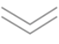

来访者须知
一、心理咨询中心的宗旨是以爱心为本、以合格专业水平为依托，为来访者提供心理支持和辅导。
二、本心理咨询中心仅为本校在编教师和在读学生提供免费心理咨询服务。所有咨询均须提前进行预约。
三、为了让更多的来访者能有机会得到免费的咨询服务，我们限定每位来访者每学期咨询次数不超过8次。
四、心理咨询遵循保密原则，来访者所透露的任何个人隐私，心理咨询师都有为之保密的责任。如果出于科研和学术需要引用个案，则必须经过来访者本人同意，并隐去来访者的姓名等与来访者具体身份相关的信息。但是，来访者有自杀、杀人等严重伤害自己和别人的危险时，心理咨询师则必须报告相关部门以防止危害生命的事件发生。
五、心理咨询只针对心理正常人群，对于咨询工作范畴以外的来访者，我们会及时进行转介。
六、心理咨询的成效很大程度上取决于来访者是否有强大的改变动机和是否主动配合。
七、来访者与心理咨询师之间，不应发展咨询关系以外的友谊、恋爱等关系。
八、心理咨询师不能接受来访者馈赠的礼物。
知情协议
为了保护您的权益，保证咨询的顺利进行，提高心理咨询与治疗质量，请您仔细阅读以下事项，并签名确认您已知悉、认可和接受本确认书所列事项：
一、关于咨询
1.中心对在校学生及教职工的咨询服务不收取任何费用。
2.咨询每次为50分钟，每周限咨询一次，可以持续预约。
3.每人每学期咨询次数不得超过8次。（需超过8次者，需填写长程咨询申请表，并征得咨询中心主任同意）
二、关于时间
请按约定时间到达咨询地点。
1.若因故不能按时前来，请提前一个工作日告知取消咨询，电话62336558。咨询当天临时变更的， 仍作咨询一次处理。
2.迟到累计达到30分钟的，扣除咨询一次。
3.无故爽约一次的，将取消本学期咨询资格。
三、咨询工作原则
1.保密原则：心理咨询师将遵循保密原则。来访者所透露的任何个人隐私，心理咨询师都有为之保密的责任，如果出于科研和督导原因需要引用个案必须经过来访者本人同意，同时对个人隐私做严格技术处理，隐去有关来访者身份的相关信息。
2.保密例外：当来访者有自杀、自伤、杀人、伤人等严重伤害自己和他人的想法或行为时，应明确对咨询师予以说明，同时咨询师应及时报告咨询中心，以便于我们最大限度的保证来访者及他人的生命安全。
3.尊重原则：咨询师要尊重每一个来访者得人格和其独特性。
4.自助的原则：心理咨询主要是协助来访学生进行自我探索，提高自我解决的能力。
的原则：心理咨询不仅要解决学生的心理困扰，更要注重学生个人的长远发展，中心不对学生开展心理治疗工作。
三、咨询工作原则
1.在来访者同意的情况下，可以进行录音和录像，并由实习咨询师跟诊。
2.咨询的录音及录像资料，由咨询中心的专职老师管理，严格遵守保密协议，保证信息安全。
3.对咨询过程进行录音录像，有助于咨询师改进咨询过程，提高咨询质量。
四、关于权利
1.您有权了解咨询师的专业资历、学位、专业资格证书等情况。
2.来访者有权更换咨询师。
3.来访者有权与咨询师商讨咨询方案、咨询目标及咨询次数（限8次以内）。
六、关于义务
1.为更好的服务广大学生，请在咨询结束后扫描二维码填写咨询反馈表。
2.在咨询过程中开放自己，积极为自己的咨询过程负责任。
七、关于回访
是否同意在咨询结束后参加回访。同意□ 不同意□
来访者签名：________（是否同意：跟诊____ 录音____ 录像____）
咨询师签名：________跟诊实习咨询师：________日期：________
来访者现场，填写预约单（保证信息完整），OQ量表，与预约员确认预约时间。
如在网络预约，查看咨询师信息及空闲时间，并致电62336558与预约员确认。
咨询前一日会以短信方式通知，收到请回复。
咨询当日请提前10分钟到咨询中心等待。
与咨询师签署《知情协议书》
咨询完成后请与咨询师协商下次咨询时间，或者结束咨询。


查看更多
一、基本工作原则
1、尊重的原则：咨询师要尊重每一个来访者学生的人格及其独特性。
2、保密的原则：咨询师要为来访者保守隐私，不应把来访者的具体信息告知他人，除非来访者有自杀和伤人的危险。
3、自主的原则：心理咨询主要是协助来访者进行自我探索和解决自我问题。
4、发展的原则：心理咨询要解决学生的心理困扰的同时，更要注重学生的个人长远发展。
二、咨询师要有良好的助人品质，较高的心理、健康水平和良好的社会支持系统，注重自我心理保健。
三、咨询师不得与来访者有亲密肢体接触。
四、咨询师要定期接受专业督导，不断提升专业水平。
五、咨询师要遵循职业道德与专业理论，不利用咨询关系为个人谋利益，保持咨询关系的客观性。
六、咨询师要按照确切的工作时间表进行咨询。
七、咨询师要认真填写咨询记录，并妥善保管注意保密，如果咨询需要录音或录像，必须在咨询前与来访者签订相应协议。
八、咨询师要对每学期咨询的基本情况进行统计并分析撰写总结报告上报学校主管部门。